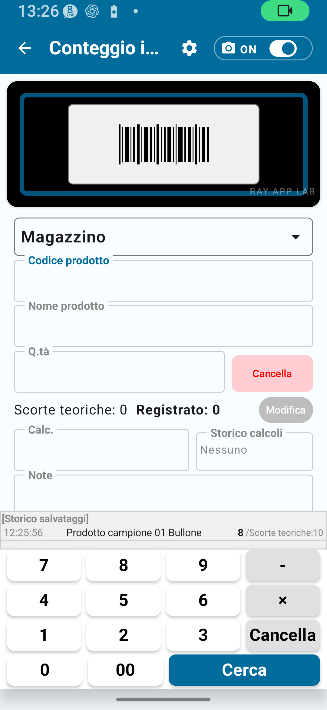

L'inventario fisico consiste nel contare fisicamente le merci presenti sul posto e registrare le quantità. La versione gratuita consente di provare il flusso di base dell'inventario fisico.
Il flusso principale è: scansionare il prodotto → inserire la quantità → salvare → controllare lo storico.

| Elemento | Limite versione gratuita | Come rimuoverlo |
|---|---|---|
| Record anagrafici | Max 30 | Versione standard o superiore |
| Record storico inventario | Max 30 | Versione standard o superiore |
| Record esportati | Max 30 | Versione standard o superiore |
| Blocco rotazione schermo | Non disponibile | Versione standard o superiore |
| Impostazioni regole codice dettagliate | Non disponibile | Versione completa |
| Impostazioni regole ubicazione dettagliate | Non disponibile | Versione completa |
| Impostazioni fotocamera dettagliate | Non disponibile | Versione completa |
| Export CSV esteso | Non disponibile | Versione completa |
Apri la fotocamera e inquadra il codice a barre: l'app lo legge automaticamente. Se la scansione non riesce, prova in un ambiente più luminoso oppure passa all'inserimento manuale.
Quando il codice a barre non è disponibile, inserisci direttamente il codice prodotto nel campo dedicato. Se il codice è già registrato, il nome del prodotto viene compilato automaticamente.
Per i codici non registrati, inserisci manualmente il nome del prodotto. Il nome inserito viene salvato nello storico dell'inventario fisico. Se lavori senza registrare prima i dati anagrafici, tieni presente il limite di record.
Inserisci come valore numerico la quantità effettivamente contata sul posto.
Puoi aggiungere liberamente appunti di lavoro o commenti. Le note vengono salvate insieme alla voce nello storico.
| Campo | Descrizione | Obbligatorio / Opzionale |
|---|---|---|
| Codice a barre / Codice prodotto | Codice usato per identificare il prodotto | Obbligatorio |
| Nome prodotto | Da inserire se il codice non è registrato | Obbligatorio in base alla situazione |
| Ubicazione | Luogo in cui si sta effettuando l'inventario | Dipende dalle impostazioni |
| Quantità effettivamente contata | Quantità contata sul posto | Obbligatorio |
| Note | Appunti di lavoro o commenti | Opzionale |
| Modalità inventario | Ubicazioni disponibili | Esempio d'uso |
|---|---|---|
| Semplice A | Solo magazzino | Gestione di un singolo magazzino |
| Semplice B | Magazzino + Negozio | Inventario sia in magazzino che in negozio |
| Semplice C | Solo negozio | Gestione di un singolo negozio |
Le voci di inventario fisico salvate possono essere consultate nello storico.
La versione gratuita conserva fino a 30 record nello storico dell'inventario fisico. Quando si raggiunge il limite, segui le indicazioni mostrate nell'app. Per un uso continuativo, valuta il passaggio alla versione standard o alla versione completa.
La versione gratuita limita il numero di record esportabili in CSV.
| Elemento | Versione gratuita | Versione standard | Versione completa |
|---|---|---|---|
| Record esportati | Max 30 | Max 300 | Illimitati |
| Esportazione colonne complete | Limitata | Limitata | Esportazione CSV estesa |
| Funzionalità | Versione richiesta |
|---|---|
| Registrare più di 30 record anagrafici | Inventario fisico standard o superiore |
| Salvare più di 30 record nello storico | Inventario fisico standard o superiore |
| Esportare più di 30 record | Inventario fisico standard o superiore |
| Blocco rotazione schermo | Inventario fisico standard o superiore |
| Impostazioni dettagliate delle regole codice | Versione completa dell'inventario fisico |
| Impostazioni dettagliate delle regole ubicazione | Versione completa dell'inventario fisico |
| Impostazioni dettagliate della scansione con fotocamera | Versione completa dell'inventario fisico |
| Esportazione CSV estesa | Versione completa dell'inventario fisico |
| Applicare i risultati dell'inventario fisico alle scorte | Versione completa dell'inventario fisico |
Se gestisci fino a 30 prodotti, la versione gratuita può essere sufficiente per un inventario fisico di base continuativo.
Prima di avvicinarti al limite di 30 voci nello storico, esporta i dati in CSV per conservare i record su PC o in un foglio di calcolo.
Scegli in anticipo la modalità più adatta in Impostazioni → Impostazioni inventario. Questo rende più fluido ogni lavoro di inventario fisico.
Quando i record anagrafici o lo storico si avvicinano a 30, valuta il passaggio alla versione standard o alla versione completa. Raggiunto il limite, il salvataggio o l'esportazione potrebbero non essere più disponibili.